Java
Python
C++
C#
Javascript
Git
Qiskit
Unix
Windows
Problem Solving
Planning
Organisation
Leadership
Diligence
Motivation
Creativity
Hi, I'm Joe!
I'm a hardworking, confident and motivated 19 year old Computer Science student studying at Lancaster University.
I love programming! In my spare time I'm always working on creative projects and games. I'm excited to put this passion to use, and contribute to a meaningful, impactful project with a team of people like myself in the future.
I'm confident in Java, Python and C++, and have made a number of projects in my own time to improve, as you can see below. My personal favourite is the FPL Simulator, as I challenged myself to use all 3 languages and I'm very happy with the result.
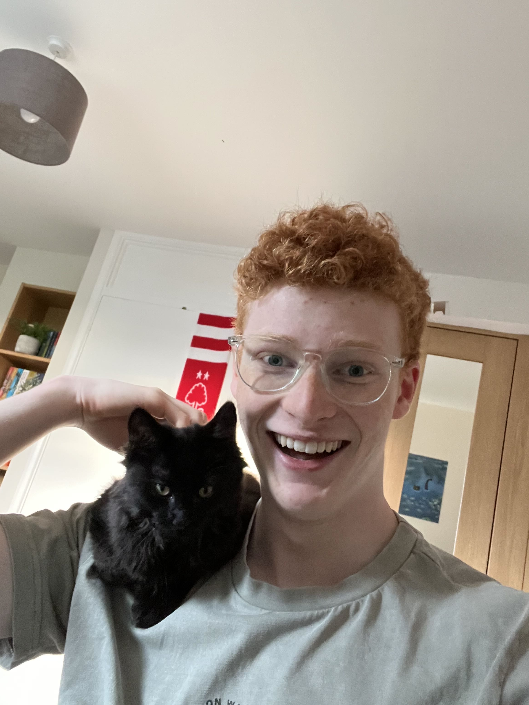
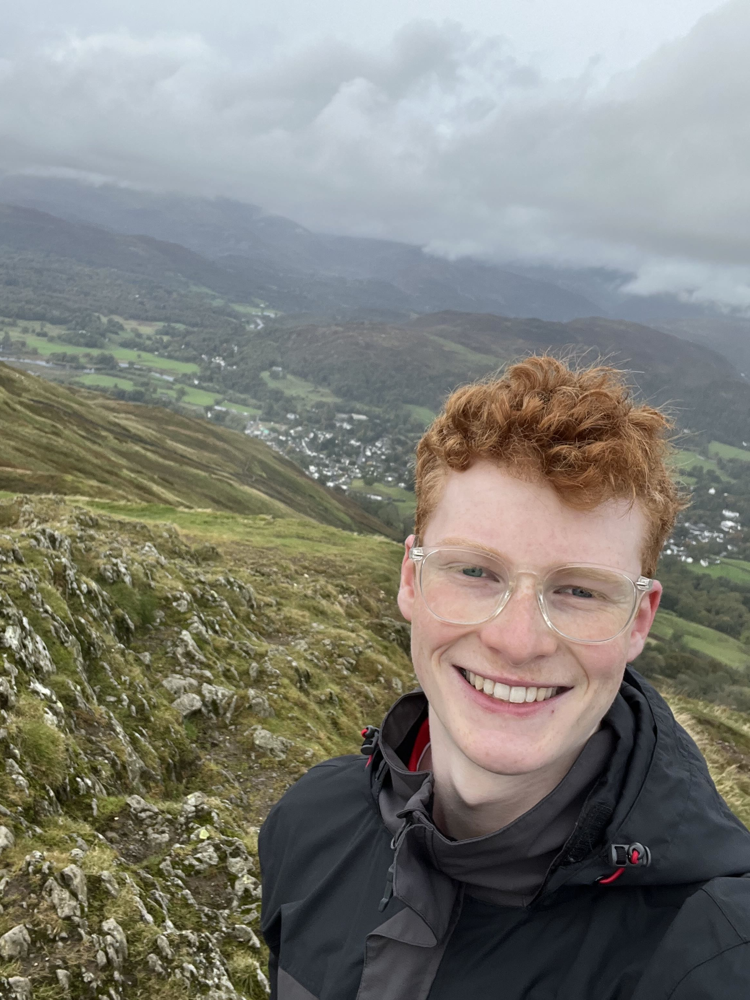
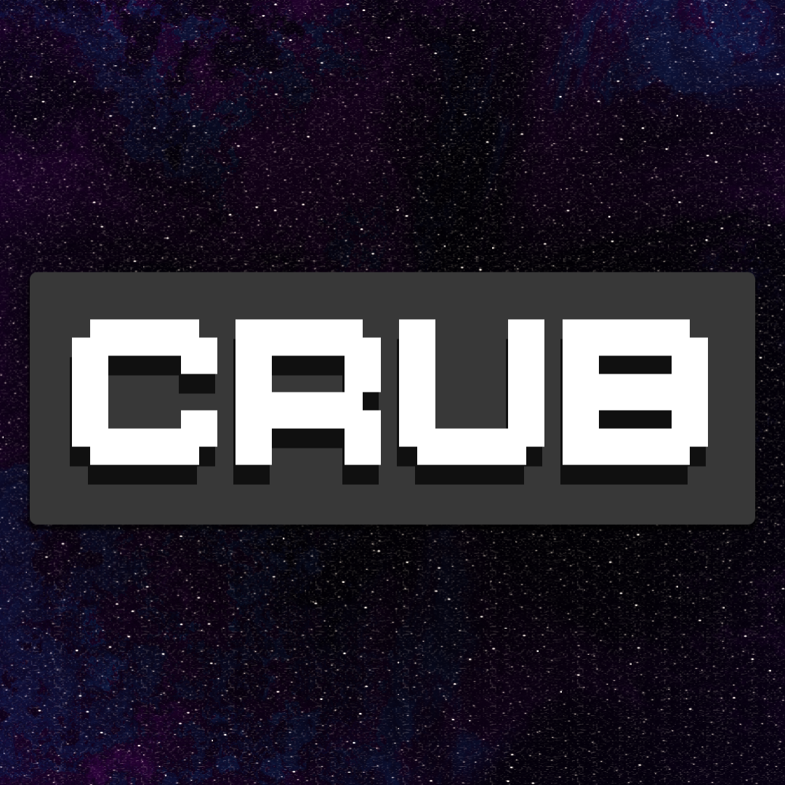
Video game recreation (and expansion) of a 'push your luck' card game I invented. Hoping to make a single player mode and publish to Steam in 2026.
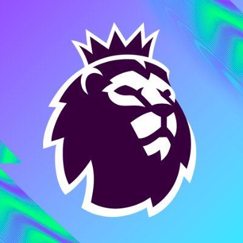
A project made to let you simulate past Premier League seasons while managing your own Fantasy team.
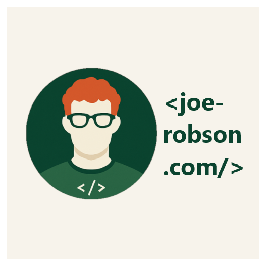
What you're looking at right now!
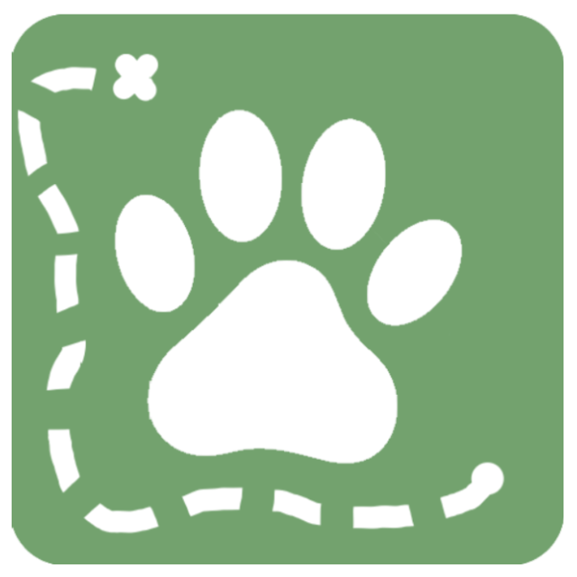
A productivity app about walking different animals through relaxing scenery while you work.
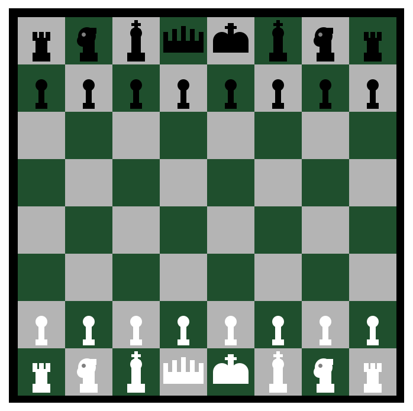
Standard vanilla computer science project. It's chess.
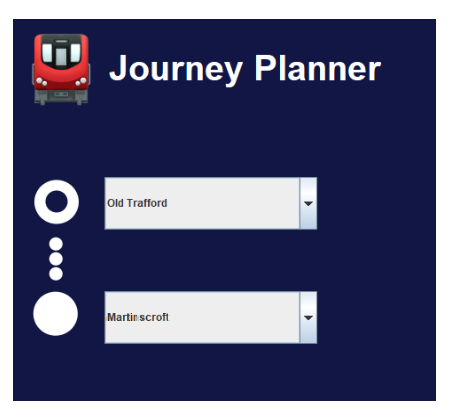
Implementation of Dijkstra's algorithm to plan fastest routes through the Manchester Metrolink. Made for Easter project at University.
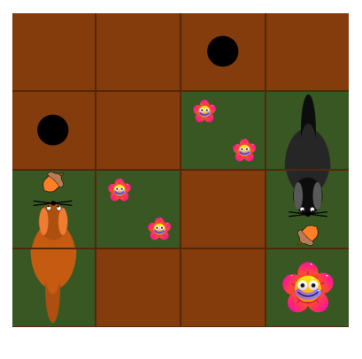
French puzzle game about squirrels and nuts. Made for Easter project at University.
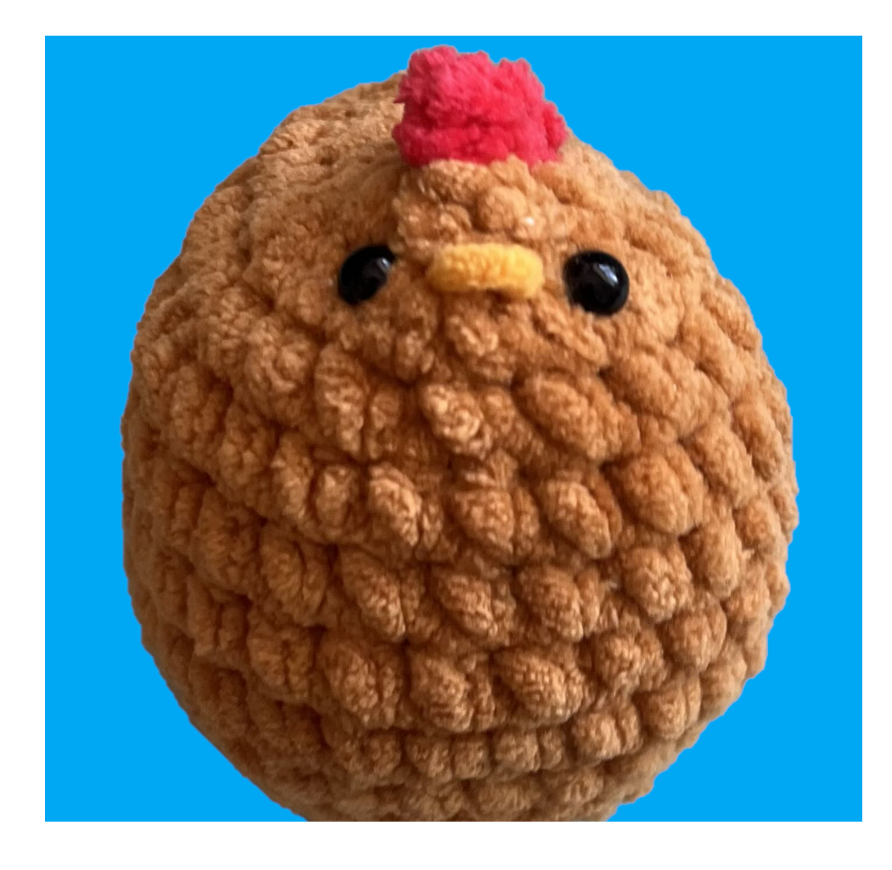
Silly arcade-like minigame about working on an Egg Farm.
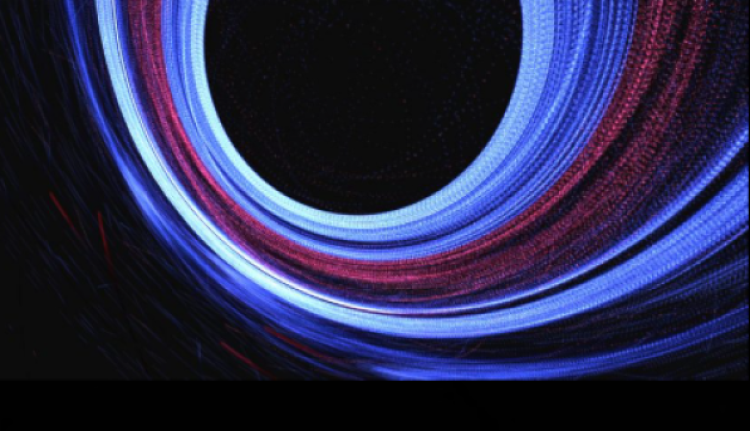
I worked from December 2025- January 2026 fixing bugs and adding functionality to RINGMIND: a planetary ring simulator managed by Bron Szerszynski who over the last few years has employed multiple students from Lancaster University. It was an honour to work on it and has given me invaluable experience working with and understanding other people's code.
Between February and March 2025, I worked as a telephone fundraiser in Lancaster University's annual telethon in a team that raised over £160,000 for Lancaster Univesity's Opportunity Fund, (£60,000 over the original goal) helping to support students from lower income backgrounds attend higher education.
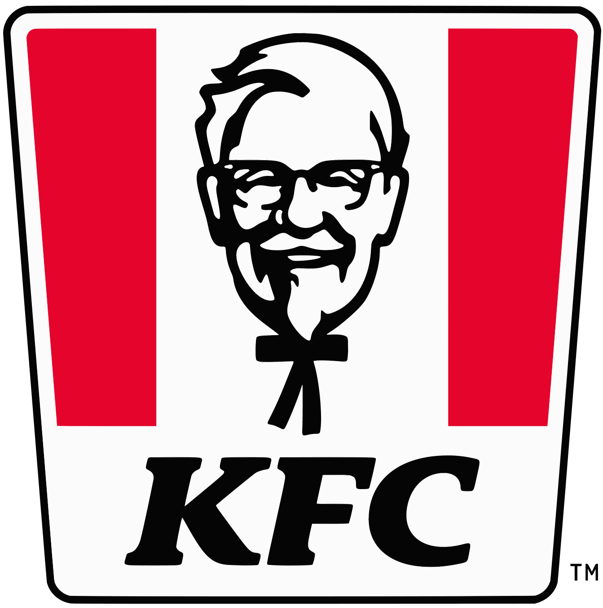
I gained experience in the world of work through employment at KFC in the Malls Shopping Center, Basingstoke between October 2022- September 2025, where I learnt how to present myself in a positive and professional manner when interacting with customers and colleagues.